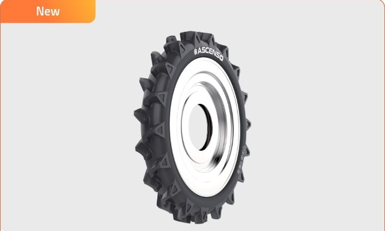
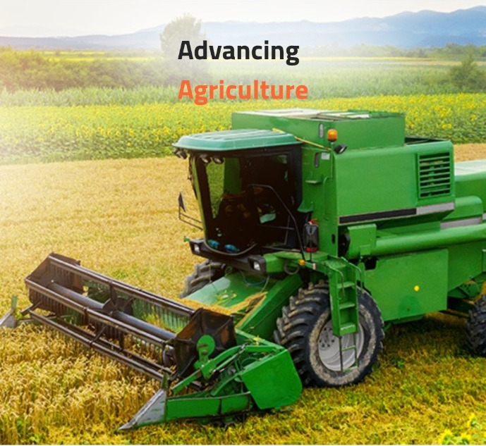
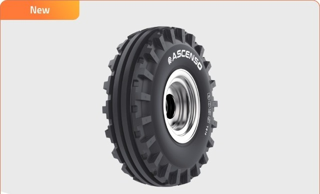
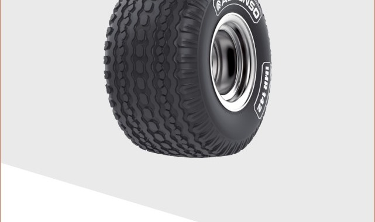
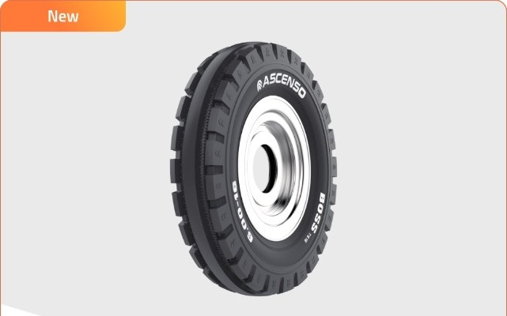
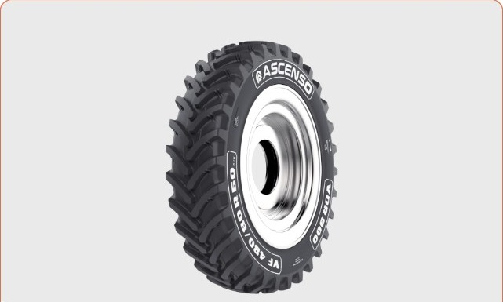

New

TDB 126
🚜
Tyre for Agriculture
Bias | R-2 | TL
Tractor Drive Bias 126: Built to Perform for Multiple Field Applications from Spraying/Row Crop to Puddling Operation

Ascenso provides a comprehensive range of high-performance farm tyres, including standard options and cutting-edge VF technology for maximum productivity. Our lineup covers a full range of farm applications, including tractors, trailers, harvesters, sprayers, row crop machines, and implements. There’s an Ascenso tyre for every job on the field.
Remains productive on all terrains
Protects yield with reduced ground pressure
Optimises performance with lower fuel use
Withstands heavy-duty farm operations




